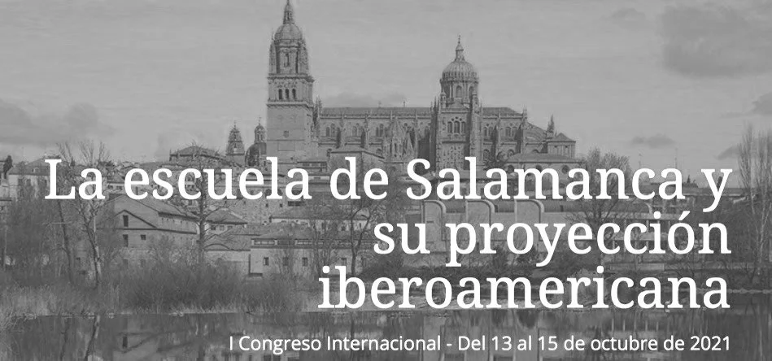

I presented this paper on a panel titled "La Escuela de Salamanca en Iberoamérica" ("The Salamanca School in Iberoamerica"), hosted by the University of San Dámaso in Madrid. The session, chaired by Andrés Iñigo Silva (UNAM), featured leading scholars including Jörg Tellkamp (UAM Iztapalapa), Igor Cerdá Farías (UMSNH), Miguel Ángel Romero Cora (UNAM), and Omar Rodríguez Camarena (UNAM).
The School of Salamanca in the Shadows: Rediscovering Late Spanish Scholasticism in Revolutionary New Spain
Today, when one thinks of the epicenters of Western thought, one inevitably thinks of the Ancient Greek philosophers and the prolific jurists of the Roman Empire. One thinks of Medieval Western Christendom with its brightest minds shining out of the Universities at Paris and Oxford and of the Renaissance as an almost uniquely Italian affair. One cannot imagine the Reformation without invoking the German Sprachraum or the Industrial Revolution as a phenomenon brought about by the English and Scottish Enlightenments.
When one thinks of the West, one often fails to recognize the philosophical and theological contributions of Spain and most certainly of Hispanic America. The Hispanic contribution to Western liberal thought has been widely ignored by contemporary scholars, and often by Hispanics themselves. In 1896, a mere two years before the Spanish-American War finally extinguished the remaining glow of “the empire on which the sun never sets,” Ángel Ganivet lamented that the Spanish conquest of the Indies was the moment in history in which the “[Spanish] spirit leaves its marked channel and is spilled throughout the world in search of vain and external glories, converting the nation into a reserve barracks, a hospital for invalids, a hotbed for beggars.”1
This gloomy outlook, compounded, perhaps, by the consequences of the abdications at Bayonnne, the subsequent American wars of independence and the impending war with the United States, might be seen as a reflection of the Black Legend, a historiographical tendency consisting of anti-Spanish and anti-Catholic propaganda, which Spain’s enemies popularized in the 16th century. As Richard Kagan notes in Spain in America:
Compounding this perception of Spain as an inferior 'other' was the Black Legend, the centuries-old cluster of Protestant beliefs that the United States inherited from the British and, to a certain extent, from the Dutch. The Black Legend equated Spain with the Inquisition, religious bigotry, and the bloody persecution of Protestants and Jews. It also conjured up images of despotic monarchs who denied their subjects access to any semblance of economic and political freedom and who had consequently set Spain onto the road of economic weakness and political decline. Such a reading of Spanish history was overly simplistic but promoters of American exceptionalism found it useful to see Spain as an example of what would happen to a country whose fundamental values were antithetical to those of the United States.2
Yet while the Spanish empire was certainly not free of moral blemishes, Roberto Fernández Retamar reminds us that, "Assassinations and acts of destruction were not lacking in the conquests carried out by the other Western powers. What they did lack were scrupulous men who defended the rights of the Indians, and debates about the legitimacy of the conquest.”
With Retamar’s words in mind, one can begin to understand the historical importance of the Hispanic thinkers on both sides of the Atlantic world who fervently defended the rights of the natives while also challenging both the crown and the Pope’s right to conquer foreign lands as the European imperialist age was being born.
To the New World, these men brought ideas and ultimately institutions – legal, cultural, religious and educational – which were products of the consolidation and culmination of centuries of medieval proto-liberal European juristic thought.
Yet as Spain looked towards modernity – first renouncing the ancient rights and freedoms which allowed the unification of the kingdom in favor of Absolutism and later attempting to adjust course through liberal reforms – the rights enjoyed by individuals and communities did indeed begin to erode. For our purposes, we can focus on the changes that began after Spain’s annus mirabilis, 1492, when Granada was reconquered, the Jews were expelled from the Catholic Kingdoms, the Castillian Gramática was first published, and, perhaps most notably, the Indies were “discovered.” These events threw questions of nation, humanity, race and sovereignty to the forefront of the times, and often, new principles and attitudes were embraced which denied centuries of previous political thought.
However, as the Spanish began their conquest of the New World, another group of Spanish men were in the process of conquering the lecture halls of the great Spanish (and later American) universities, serving as a vanguard for the Spanish spirit for which Gánivet lamented as the Spanish empire crumbled. The School of Salamanca, grounded in the work of Dominican Friar Francisco de Vitoria, tackled issues of Spain’s rising power and global reach by reexamining and later reimagining the work of Thomas Aquinas, Aristotle, Greek and Roman juristic traditions, and patristic writings, while still addressing opposing views within court and the Church. Contributions by these “Spanish Schoolmen,” as Friedrich Hayek once called them, include Juan de Mariana’s notion of the moral superiority of natural law; Diego de Covarrubias subjectivist doctrine of value; Luis Saravia de la Calle's notion of economic rent determined by price; Luis de Molina's notion of the dangers of fractional reserve banking; and Martin Azpilcueta Navarro's quantity theory of money.
The questions brought about by the Schoolmen who accompanied the conquistadors from Spain to the Indies (be it questions of limitations of royal or papal authority or humanity of the natives) ultimately defined Late Hispanic Scholasticism. Without the transatlantic relationship born of Columbus’ initial voyage, the School of Salamanca may have been little more than a blip on the historical radar.
The Spanish spirit, manifested in the Hispanic intellectual tradition brought to the Indies by missionaries and jurists, flourished in the Americas long after the Absolutism of monarchs such as Filipe II, Filipe III, and Carlos IV undermined the liberal principles which the Spanish public had known since the days of the Romans and the Visigoths. Ultimately, Late Hispanic Scholasticism, and perhaps most notably, the School of Salamanca, would be the catalyst for revolution and the moral and intellectual base upon which Hispanic America would be built and through which the Hispanic spirit would survive.
Although these schoolmen and their contributions were forgotten in Iberia as Spain moved away from its Medieval spirit, there is evidence that suggests the work of the School of Salamanca survived in Hispanic America. Records of the schoolmen can be found in colonial library archives, but perhaps most notably, in the independence texts of early American republics.
Nevertheless, when one ponders the driving minds behind the Hispanic American independence movements, one would almost certainly find the name Montesquieu before Mariana or Rousseau before Suarez.
It is my argument, however, that the driving force behind the early liberal movements in Hispanic America were fundamentally Hispanic in nature and not only a product of French or British enlightenment thought. This is due to the fact that the revolutionary ideas promulgated by the Hispanic schoolmen were being taught throughout the Indies since the first university opened in Lima in the first half of the sixteenth century and onto the eve of revolution. Whether one thinks on 11th century charters (written before Magna Carta) or Scholastic writings on the limits of monarchal power for taxation or currency manipulation, well versed jurists and run of the mill citizens in the Indies would have been well versed in the Hispanic ideas which could fuel revolution. While some scholars say Locke, this essay will respond Mariana. While some bellow Rousseau, I will insist upon Suarez.
I will thus endeavor to use the catalogs of various colonial libraries from the Viceroyalties of Peru and Nueva Granada to get a glimpse into the intellectual lives of Hispanic-America. I will provide a list of accepted members of the School of Salamanca and compare it to a number of inventories of private libraries from across sixteenth and seventeenth-century Lima and eighteenth-century Venezuela. As Carlos Alberto Gonzalez Sanchez notes, to know what was being read by the inhabitants of the New World, “might be the best way to understand conducts and ways of life, attitudes, and beliefs, above all in a time in which the state assumed the direction and orientation of communal objectives.”
Later, I will analyze early independence documents to demonstrate that those very ideas remained alive on the eve of revolution when the architects of independence used the schoolmen’s ideas to explain and justify their revolutionary projects.
Although this method will do little more than prove the presence of Hispanic Late Scholastic thought in the Spanish colonies, it will demonstrate that the ideas from the universities in Latin America, which promoted free-trade, currency stability, and a check on monarchal power, were present from the earliest days of the conquest of the Indies and survived into the republican era. Ultimately, this essay will attempt to demonstrate that the ideas required to foment revolution were fundamentally Hispanic and, therefore, homegrown in nature.
New World Universities
As has been previously suggested, it would be false to claim that the Hispanic spirit of scholasticism remained on the Iberian Peninsula. It did, indeed, make the initial crossing with the conquistadores, and the priests and jurists that followed them, and ultimately was formed by the many questions and voices arising from the Indies and the many transatlantic debates that thus ensued. While many great cultures dominated what is today Latin America, it would be impossible to claim that university systems such as those born in the Kingdom of León were present before the conquest. While the Aztec empire had compulsory education for all (Calmecacs for nobles and Telpochcallis for commoners) and noble born Inca males studied at Yachaywasis (while females studied at Acllahuasis,) the first Western-style universities arrived with the first conquistadors. As Roberts, Rodriguez, and Herbst note:
Nothing remotely resembling a university existed in the New World before Europeans arrived and settled there. Yet by the end of the eighteenth century, numerous universities and other institutions of higher education could be found in North, Central and South America. They had not been invented de novo; they were implants from the European university tradition and its stocks.3
But for what purpose were Spanish style universities founded in the Indies? German sociologist Hanns-Albert Steger argues that the answer might be best understood, "if one considers that the conquest [of the Indies] can be understood as a repetition…of the reconquista of the Iberian Peninsula."
To this consideration Steger adds that universities served to expand the Hapsburgian notion of a realm composed of “closed kingdoms… held together by the crown, and not by a central administration.”4 Besides serving as an exercise in creating nation-states, through this premise of decentralization, “the incorporation of the kingdoms of the New World into the Habsburg Empire was made possible.”5 As Stenger explains, such a formulation “existed before the Conquest, as Spain had imagined herself as a federation of “kingdoms,” each of which, in order to prove its internal autonomy, had its own university.”6 And so within this context, one might imagine that this Hispanic exercise in nation-building might lead to different results, albeit through similar methods, in the Indies as opposed to in Spain. That is to say, Latin America was allowed to develop on its own intellectually and, to a degree, spiritually. While both the Spanish court and the Church would certainly limit what was to be read, a necessary level of intellectual autonomy was preserved in the American universities. This autonomy was made apparent when Scholastic ideas kept being taught after various state and clerical bans. Here, we think of Mannheim’s notion of principia media (mediation between interpretation and practice) as “the mechanism for the adaptation of legislation from distant Spain, which necessarily had to be abstract, in a region of different principia media, from which the famous expression ‘I will obey but not comply’ was born… This mechanism ensured that, despite the immense geographical and spiritual distance, the administration of the [Spanish] empire would not be interrupted, but rather, leave deep roots throughout various regions of the world.”7 In a word, the principles by which universities were established in the Indies mirrored the decentralized way in which the empire was constructed and later managed under the Hapsburgs.
However, a more pragmatic approach to the establishment of universities in the Indies is offered by Carlos Tünnermann Bernheim who posits that colonial universities ultimately were constructed for three main reasons:
- The need to provide locally for instruction to the novices of the religious orders that accompanied the Spanish conquerors, in order to meet the growing demand of ecclesiastical personnel;
- To provide educational opportunities, more or less similar to those offered in the [Spanish] metropolis, to the children of the peninsulares and criollos, in order to link them culturally to the empire, and at the same time, prepare the necessary personnel to fill the secondary positions of the colonial, civil, and ecclesiastical bureaucracy;
- The presence, especially in the early years of the colonial period, of religious that were formed in the halls of the Spanish universities, predominantly Salamanca, who wished to elevate the level of studies [in the Indies] and obtain authorization to award degrees.8
Ultimately, I favor this pragmatic approach as a need for home-grown, skilled labor capable of administering the vastly expanding Spanish footprint in the Indies made the need for American universities imminent.
It is paramount to remember, however, that the universities were fundamentally modeled after the University of Salamanca and American professors were indeed trained in the scholastic tradition. The idea of a decentralized university which served to foment autonomy under the crown, however, should not be forgotten, as a similar principle ultimately would lead to local unrest upon the deposition of the Spanish kings during the Peninsular War. And so, in 1538, a mere 46 years after Columbus first landed in Guanahani, the first university opened in Santo Domingo, receiving a royal privilege granting the right to confer academic degrees to students in 1558—all this more than 60 years before the landing of the Mayflower, and 80 before the founding of Harvard. Before the close of the 16th century, universities would open in Mexico City, La Plata, Bogotá, Quito, and Lima. These universities, modeled after Salamanca, the famed university of the “Golden City,” offered courses in artes, theology, law, and medicine. On the eve of revolution, the leaders of the emancipatory movements were thoroughly trained in Late Hispanic Scholasticism. When one considers Hayek’s notion of ideas spreading through public intellectuals or Cristina Soriano’s work on information networks allowed radical ideas to spread in colonial Venezuela before the arrival of printing presses, it becomes hard to doubt that even non-literate individuals would have had access to the ideas of Suarez, Mariana, or Vitoria which certainly helped advance revolutionary ambitions.
Private Libraries and their Salamancan Content
And yet, although the record shows that New World universities were styled after Iberian universities and scholastic methods of teaching were prevalent throughout colonial period, there is another strategy that might give us an insight into the colonial mind on the eve of revolution: an exploration of the contents of various private libraries. Using the list of Schoolmen profiled in Marjorie Grice-Hutchinson’s The School of Salamanca: Readings in Spanish Monetary Theory9, I will attempt to demonstrate that Late Hispanic Scholastic thought was present across various realms and centuries alike. Although this exercise can do little more than show us what was being read in Hispanic America, it will demonstrate how deeply the Hispanic Schoolmen permeated the minds of Hispanic America. It should be made clear, however, that this is not an expansive list and that Hispanic American Scholastics also played an important role in the Atlantic World dialogue. To accomplish this task, I have borrowed from private library catalogs compiled by Teodoro Hampe Martinez and Jose del Rey Fajardo from Peru and Venezuela, respectively.
What will first be considered is Hampe Martinez’s overview of the most read books in colonial Lima. When one explores his initial chart, which outlines “the most prevalent works of Spanish literature in colonial Peru (XVI-XVII centuries,)”10 one finds 27 private libraries represented. Within those libraries, 22 books are considered to be the most prevalent within the context of colonial Lima. The authors represented include figures as notable as Garcilaso de la Vega, Miguel de Cervantes, and Fernando de Rojas. If one were to look for a shadow of the Late Hispanic Schoolmen, however, one need only look for the work of Juan de Mariana (the Jesuit proponent of tyrannicide and defender of currency stability and just price), who is represented in 15 of the 27 libraries listed by Hampe Martinez. This represents a 55.6 percent inclusion rate within the private libraries of colonial Lima examined by this paper. If one were to expand the scope of schoolmen beyond those listed by Grice Hutchinson, this number rises as one could include scholastically trained scholars such as Florian de Ocampo, Prudencio de Sandoval, and Pedro Mejía.
When looking for evidence of the School of Salamanca in individual private libraries in Lima, I looked to the catalogs of Dr. Agustin Valenciano de Quiñones (1576,) Dr. Gregorio Gonzalez de Cuenca (1581,) treasurer Antonio Dávalos (1582), Fr. Alonso de Torres Maldonado (1591,) and Hernando Arias de Ugarte (1614), respectively. Within the first library, Salamancan authors are represented through the writings of Domingo de Soto, Diego de Covarrubias y Leiva, and Tomás de Mercado. In the second library, Salamancan authors include Luis de Molina, Martin de Azpilcueta, Cristobal de Villalon, Luis Saravia de la Calle, Alonso de Castro, Francisco de Vitoria, Juan de Medina, Diego de Covarrubias y Leiva, and Juan de Medina. In the third library, one finds works by Bartolomé de Albornoz and Alonso de Orozco. In the fourth library, one finds works by Domingo de Soto, Martin de Azpilcueta, and Francisco de Vitoria. In the fifth library explored by Hampe Martinez, one finds works by Martin de Azpilcueta, Domingo de Soto, Juan de Medina, Cristobal Villalon, Alfonso de Castro, Luis de Molina, and Diego de Covarrubias y Leiva. In terms of percentages, the inclusion of these books includes a rate of incidence between 3 to 8 percent. Similarly, in the catalog of the Colegio de Merida in Nueva Granada, Salamancan authors include Martin de Azpilcueta, Melchor Cano, Diego de Covarrubias y Leiva, Luis de Molina, Francisco Suarez, and Domingo de Soto. The works of these authors constitute 3.5 percent of the total collection.
Although the prevalence of Salamancan authors is not as marked as a student of Hispanic Scholasticism may have hoped, a few points should be held in consideration. Firstly, many Salamancan works were contentious and censored by both religious and civil authorities. One could thus imagine they might not be included on official records. Secondly, this essay only considers authors listed in Grice-Hutchinson’s work. That is to say, for the sake of objectivity, many authors with Scholastic tendencies were not counted amongst the Late Hispanic Scholastics present in the catalogs. With that being said, the fact that Salamancan authors were present consistently in private libraries from 1576 until at least 1780 is of note. A further reading of Los Libros del Conquistador by Irving Leonard would demonstrate that even within the private libraries of the conquistadors, the ideas of individual freedom, limited temporal power of popes and emperors, and a strong respect for private property were widely represented.
The School of Salamanca
Yet in order understand the revolutionary nature of Late Scholastic Hispanic thought, one must first explore what was being taught by the priests and jurists from the School of Salamanca, keeping in mind that their vast writings permeated both sides of the Atlantic World. To avoid doing so would allow any reader to readily accept that the ideas born of the French and American revolutions were truly unprecedented, especially within the Hispanic context. However, it is important to note, as Darío Dawyd writes, “during the cycle of Latin American independence, Hispanic thought borrowed from many sources and coexisted, albeit uneasily, with traditional Neo-Scholasticism, the Enlightenment, and Spanish anti-populist thought.”11 While it is impossible to deny that foreign notions of republicanism and liberty were certainly circulating throughout Hispanic America, the kindle which helped light the flame of revolution was certainly homegrown. Often times similar conclusions could be reached from Late Hispanic Scholastic and Enlightenment starting points alike.
Rarely in history has there been an intellectual tradition as rich and as expansive as that of the Late Hispanic Scholastics, and more specifically the School of Salamanca. This school, made up of Catholic clergy, religious, jurists and theologians, from Salamanca, Seville, Navarre, Coimbra, and the New World, tackled matters as varied as property, money, value and price, usury, human freedom, and human rights. To grasp the spirit of the Hispanic Scholastics, it is important to understand the historical circumstances of the world which they sought to explain and evaluate. The School of Salamanca was defined in the annus mirabilis, 1492, when Granada was reconquered, the Jews were expelled from Iberia, the Castillian gramática was first published, and, perhaps most notably, the Indies were conquered. Yet while the theologians and jurists of late Medieval Spain and Hispanic America worked tirelessly to evaluate the rising issues of their ever-changing world, they also served as a vanguard against the Absolutist ideas that had descended upon the Hispanic world.
To be clear, however, the writings of the jurists and theologians of the School of Salamanca were not conceived in a historical vacuum; they were the consolidation and culmination of centuries of medieval European juristic thought.
Before the Absolutist age, Hispanic kingdoms flourished under institutions inspired by Germanic concepts of limited monarchic power and the rights of freeman brought to Iberia by the Visigoths in the early 5th century A.D. Oath sworn associations between King and freeman, nobles, and clergy limited the power of monarchs, and from the Fueros were born some of the earliest foundations of modern rights.12 These institutions were expanded upon and codified in the midst of various Peaces and Truces of God and many of the religious and political reforms were, perhaps, introduced throughout the realm by the connectivity of the great Pyrenees monasteries of the time. It is no accident that the Charter of Leon, issued in 1017 under Alphonso V, preceded the signing of the Magna Carta by some 200 years. This document is considered the first charter to declare the fundamental rights of citizens in the history of Europe and was a point of reference when Alphonso IX’s 1188 Cortes invited representatives in from his realm, along with nobles and clergy, to participate in the first democratic “parliament” known to the Western world. Such a document would not be produced in the Anglosphere until Magna Carta’s signing in 1215. It could be said that this liberal approach made the unification of many independent kingdoms – with legal autonomy and a respect for language, tradition and culture – under a single crown possible.
But during the Hispanic golden age of the School of Salamanca, scholars sought to counter the ideas born of the reformation by returning to the spirit of medieval science while still adapting their writings to the new demands of the times and incorporating modern values that were introduced by humanism to their theology without losing the scientific and deductive character of the previous scholastic tradition. It would paint an incomplete picture to look at Medieval tradition while also considering antiquity, Roman law, and biblical and patristic traditions. It is also important to note that even on the eve of revolution, Hispanic scholars on both sides of the Hispanic Atlantic clung to the ancient Catholic notion of reconciling faith and reason.
The history of the schoolmen in the Indies begins with Colombus’ arrival on Hispaniola in 1492, generally, but more concretely on the Sunday before Christmas of 1511, when from the wilderness of the Nuevo Mundo, a voice cried out in defense of the indigenous peoples who were being killed and enslaved by the Spanish Conquistadors. In a fiery sermon (given with the permission of the Order of Preachers,) Fray Antonio Montesinos asked his countrymen, “tell me, by what right or justice do you keep these Indians in such a cruel and horrible servitude? On what authority have you waged a detestable war against these people, who dwelt quietly and peacefully on their own land?”13 These questions sparked a debate on the rights of the Spanish in the Indies and consequently would turn into the first international human rights debate in recorded history.
While Montesinos (and Las Casas) certainly played an instrumental role in starting the debate, the most important work can certainly be credited to the work of schoolmen from Salamanca such as, Luis de Molina and Francisco Suárez. Arguably, however, none of these men played as pivotal of a role as Francisco Vitoria. Through their exploration of Aquinas’ Summa Theologiae, these schoolmen concluded that law should be treated as something created by reason and revelation and not simply as a construct of the will. Natural law, therefore, was binding on all humanity and “its principles applied to mutable situations and different peoples,”14 as God was indirectly the author of all human laws. The most notable example of this work applied to the politics of the Indies was Vitoria’s 1539 De Indis where he showed that the natives were veri domini of their property, even if they were unbelievers. There, Vitoria demonstrated the Hispanic Schoolmen’s willingness to challenge convention by refuting Aristotle’s understanding of the property rights of barbarians and thus dismissing the Conquistador’s traditional “argument from sin” on the ground that sin does not cancel an individual’s natural right to property. As Izbicki explains, “brute beasts lacked such rights, but even children and the mad, although they had guardians, nevertheless had property rights.”15
Furthermore, Vitoria also dispelled Augustine’s claim in De Citate Dei that slavery is the result of sin and therefore man’s natural state. With regards to the Conquistadors’ Aristotelian argument that the enslavement of some men was justified by their inferior mental capacity, Lewis Hanke offers an interesting anecdote when he recalls the debate between Aristotelian Juan Ginés Sepúlveda and schoolman Bartolomé de Las Casas. As Lewis explains, at the Junta of Valladolid, Sepúlveda arged that the natives were slaves by nature due to their inferior mental capabilities. To this, Las Casas allegedly retorted that although such simple-minded people might be considered slaves by nature, such people also existed in Spain.16
Vitoria went as far as to justify indigenous autonomy, under the crown, noting, “república o comunidad perfecta aquella que es por sí misma todo, o sea, que no es parte de otra república, sino que tiene leyes propias, consejo propio, magistrados propios, como son los reinos de Castilla y el de Aragón, el principado de Venecia y otros semejantes. Y no es ningún inconveniente que haya muchos principados y repúblicas perfectos bajo un mismo príncipe".17 Reading this quote, one wonders if it could have been the impetus for the crown’s willingness to work within the framework of both Spanish Republics and Indian Republics in the American colonies.
Of equal note, in De Iure Belli, Vitoria challenged the theological grounds by which the King or the Pope could wage war against the natives. Izbicki explains:
The second lecture lists seven “unjust titles” for the war against the Amerindians. Vitoria rejected the idea that either the emperor or the pope is master of the world. He denied that Emperor Charles V could take away the domains of others. He cited Juan de Torquemada’s Summa de ecclesia to prove that the pope’s supremacy was spiritual, not temporal; and he maintained that the pope could not force unbelievers to convert. According to Vitoria, discovery was not a justification for conquest; and he refuted the view that sins against nature like cannibalism and incest, which were exceptions to the natural immunity that canon law allowed to non-believers, justified conquest. There were sinners in every nation, but the pope was not entitled to wage war against Christians who were guilty of sin. Furthermore, neither the alleged voluntary choice of the Amerindians nor the idea of a gift from God could justify the conquest of their territory18
In the text, Vitoria continues to address the notion of just war, eventually concluding that differences in religion and enlargement of empire are not sufficient reasons for just war to be waged and the fact that a prince believes that his war is just is not sufficient reason for the waging of war.
In the universities of the New World, too, authors trained in the scholastic tradition would enter the debate. Fray Alonso de la Veracruz, who published Del Dominio de los Indios y la Guerra Justa. There, the Mexican schoolman wrote:
Los habitants del Nuevo mundo no solo no son niños amentes, sino que a su manera sobresalen del promedio y por lo menos algunos de ellos, son de lo más eminente. Es evidente lo anterior porque antes de la llegada de los españoles, y aún ahora lo vemos con nuestros ojos. Por lo tanto no eran incapaces de dominio propio.19
The conclusions of the schoolmen did not go unnoticed. Shortly before his death, King Ferdinand II convened a commission that would ultimately pass the Laws of Burgos, a code of ordinances meant to protect the indigenous people and protect them from enslavement, unless, “sus caciques y jefes prohíban la libre conversión de sus súbditos, o bien sea menester el desterrar inhumanas costumbres que se niegan a abandonar.”
Similarly inspired, Pope Paul II issued a bull titled Sublimis Deus in 1537, in which he declared that the natives were fully human, had souls, and had a natural right to property. As Leonard Liggio notes:
Human rights became the focus of the writings of the School of Salamanca because of the practical questions sent to them by the missionaries in the New World. Once the humanity of the Native Americans had been vindicated, the matter of their having the right to elect or reject the missionaries’ offering of Christianity became paramount. One of the important contributions of the School of Salamanca was the defense of the freedom of the human will in the sixteenth-century debates concerning free will and determinism. Thus, the free choice of the individual was central to their discussion.
Later, at La Junta de la Universidad de Salamanca, convened by Carlos V in 1540, it was concluded that, “tanto el Rey, como gobernadores y encomenderos, habrían de observar un escrupuloso respeto a la libertad de conciencia de los indios, así como la prohibición expresa de cristianizarlos por la fuerza o en contra de su voluntad.”
The encomienda received yet another – albeit nominal – blow in 1542 when Carlos V issued Las Leyes Nuevas, severely limiting the situations in which an indigenous man could enter an encomienda. Between 1543 and 1549, Real Cédulas were issued, calling for colonial powers to respect the rights of the natives, prohibiting force against them. One Cédula, issued in Valladolid on December 31, 1549 even attempted to protect indigenous lands by stating that the punishment for taking new land without permission from the crown was punishable by death.
After the death of Carlos V, Felipe II would issue his Ordenanzas in 1573, which stated:
Es nuestra voluntad encargar a los Virreyes, Presidentes y Audiencias el cuidado de mirar por ellos, y dar las órdenes convenientes, para que sean amparados, favorecidos, y sobrellevados, por lo que deseamos, que se remedien los daños que padecen, y vivan sin molestia, ni vejación, quedando esto de un vez asentado, y teniendo muy presentes las leyes de ésta Recopilación, que les favorecen, amparan, y defienden de cualquier agravio, y que las guarden, y hagan guardar muy puntualmente, castigando con particular y rigurosa demostración a los transgresores. Y rogamos y encargamos a los Prelados Eclesiásticos, que por su parte lo procuren como verdaderos padres espirituales de esta nueva Cristiandad, y todos los conserven en sus privilegios, y prerrogativas, y tengan en su protección.
Had these laws -- inspired by ancient Hispanic principles and reimagined and popularized by members of the School of Salamanca – been respected, it is unclear how relations between the Spanish and the natives may have looked. One thing remains clear, however: theory is often different than practice.
But the debate surrounding the rights of the Indigenous inhabitants of the Americas is not the only notable contribution made by the Spanish Schoolmen within the American context. As will be explored in a later section, the pactum translationis played an instrumental role in the American political reality from the earliest days of the colony until independence was declared – as can be seen by the declarations made by the Juntas and Cabildos that were born after the crisis at Bayonne. This medieval concept, made famous by Francisco Suarez, established that power originates in the people and is returned to them should the crown fall vacant or in the hands of a tyrant.
Salamancan Influences in the Revolutionary Indies
Yet Late Hispanic Scholastic ideas did not simply remain in the lecture halls of Salamanca, Lima, Mexico, or Santo Domingo. On the eve of independence, they were very much a part of the discussions waged across the public sphere, especially in light of the negative results of the Bourbon reforms of the eighteenth century. As Carlos Stoetzer explains, “to understand the actual picture of the Spanish American reality in the eighteenth century and on the eve of independence, it should be borne in mind that Enlightened despotism waged a relentless campaign against the “subversive” theories of Suarez.”20 Proof of this campaign can be seen in the 1767 expulsion of Jesuits from the Spanish Empire, the real cédula issued on October 18, 1768 which forbade centers of higher learning from teaching the works of Hispanic Schoolmen such as Suarez, Mariana, and Molina, or Nueva Granada’s Viceroy José de Espeleta’s 1795 cancellation of the chair of natural law which exposed students to the works to the works of Schoolmen such as Covarrubias and Vásquez de Menchaca.
Furthermore, the inquisition played an important role in silencing opposition—including Enlightenment literature and sixteenth century political literature, as well. But efforts to prevent the teachings of the School of Salamanca from reaching the Indies’ halls of learning were unsuccessful. As Stoetzer notes, “after the Jesuits were expelled, they were replaced not by adherents of the modern philosophies, but by their own students who, in most cases, were even more strongly imbued with traditional thought.”21 In the Peruvian Viceroyalty, this was especially true at the University of Charcas and at the Carolinian College where the School of Salamanca’s teachings on the right to rebel and the right of tyrannicide were taught by such former Jesuit pupils as Salinas, Segovia, Montoya, and Herrera.22 In Nueva Granada, where Late Hispanic Scholasticism dominated the studies across the Viceroyalty, the new French and Anglo philosophies would not reach the public sphere until the second half of the 18th century.
Therefore, “in contrast to the River Plate, where modern philosophies were well known… New Granada… gave no evidence of the impact of Descartes, Spinoza, Bayle, Locke, Hume, Berkeley, Condillac, Newton, Kepler, or Wolff, whose influence did not appear at that time. The new philosophies would come to New Granada only later, through Feijóo in the second half of the eighteenth century.”23 Late Hispanic Scholasticism was represented in Nueva Granada by Juan Martinez de Ripalda, Ignaio Meaurio, Luis Chacón, José Molina, José Rojas, Jerónimo Godoy, Manuel Balzátegui, Jacinto Antonio Buenaventura, Gregorio Agustín Salgado, amongst others.
It is important to note, however, that “Suárez also maintained his influence in the viceroyalty during the eighteenth century… even after the expulsion of the Jesuits, Suarez continued to be studied, especially at the Colegio del Rosario.”24 Even the revolutionary leaders in Nueva Granada demonstrate great Late Scholastic influence. After Antonio Nariño was imprisoned for publishing Thomas Paine’s Rights of Man in 1794, his defense was fundamentally Scholastic in nature, although he avoided invoking Suarez, Mariana, or Molina directly by name. In Nariños own words to the viceroy, “no man has received from nature the right to command others; the authority of kings is derived from the people; the prince receives authority from his subjects; he cannot use it without the consent of the nation; the Crown, the Government, public authority, are property of the nation; the nation is the owner and the princes usufructuaries.”25 If one reads between the lines, one recognizes that this is a clear invocation of the Suarezian notion of pactum translationis, the idea that sovereignty devolves upon the people. Even while promulgating new, foreign ideas, it would ultimately prove impossible to construct a new reality on anything but a profoundly Hispanic foundation.
Perhaps what is most important to understand is that, first, late Hispanic Scholasticism promoted ideas which were sympathetic to revolution under certain circumstance, and, second, individuals educated in the Indies were, by the very nature of the university system, exposed to these (often radical) ideas. It is thus impossible to imagine that the leading men of the wars of independence would not have been acutely familiar with the School of Salamanca and its all-encompassing doctrines. John Tate Lanning expands on this point when he suggests that a student of the “theoretical foundation of the Spanish American Revolution” would necessarily conclude that the Enlightened writings of “Rousseau, Voltaire, Montesquieu, or even Raynal” would not be as significant as those of the sixteenth century Schoolmen. As Lanning notes:
Anyone examining the record of the South American wars of independence will be amazed at the critical acumen and philosophical audacity of Sanchez, Carrión, Antonio Nariño, Bernardo Monteagudo, Andrés Bello, José Joaquín Olmedo, and Hipólito Unanúe. They were not leaders who sprang fully educated from the brow of Zeus. They were the fruits of an educational discipline which was thoroughly scholastic, although it was in a free society that their mature intellects unfolded.26
Historically speaking, however, it is important to note that revolutions across Latin America took place between 1810 and 1826. Stoetzer writes, “the reforms of the Bourbon regime during the reign of Charles III prepared the way for the Revolution; the Napoleonic invasion of the Iberian Peninsula was its immediate cause.”27 With this in mind, one should not forget that while independence leaders certainly would have felt the winds of revolution blowing from the United States and France, it was not until Spain was invaded and the King was deposed that popular uprisings began with force across Hispanic America. Initially, the uprisings were meant to preserve the dignity of the Spanish Crown and relied heavily on the medieval concept of pactum translationis, which initially led to the establishments of juntas and cabildos across Hispanic America between 1808 and 1810. However, that these movements were seen as a reaction against the French invasion and not a move for republicanism as the medieval concepts of belief in God and loyalty to the crown were deeply rooted in the Hispanic American mind. Coupled with this was the persistence of Late Hispanic Scholastic, and perhaps more specifically Suarezian, political thought, explained as:
(a) The obligation of the king to rule with justice and to act for the bonum commune, and his risk for deposition if he should become tyrannical; (b) should the ruler for any reason be absent, power should revert to the people, the source of all sovereignty.28
This sentiment can be observed in Nueva Granada through Camilo Torres’ May 29, 1810 reply to Ignacio Tenorio, the oidor of Quito’s, letter suggesting the establishment of a Spanish American Regency. In his response, Torres objects to this notion and used Late Hispanic Scholastic rhetoric to explain that “the oath to the king no longer counted since the bonds had been broken, and with the disappearance of the Spanish monarch, civil authority reverted automatically to the people.”29 Here, Ricardo Levene offers us a strongly worded case for the Hispanic nature of the Hispanic American revolutionary project when he writes:
The Revolution is rooted in its own past and nourishes itself from Hispanic and Spanish American ideological sources. It was formed during the Spanish domination and under its influence, though it went against it, and only in a peripheral way do the facts and ideas of the world alien to Spain and Spanish America, which constituted the native world of these ideas, have an impact. Philosophically and historically, it would be absurd to imagine the Spanish America Revolution as an act of ape-like imitation, as an epiphenomenon of the French or North America Revolution… in no part of Europe other than Spain was there such a prolific production of political literature of a markedly liberal and antimonarchical tendency… The egalitarian idea prevails in this Spanish literature: the egalitarian idea of the states among themselves, which is the thesis of Francisco de Vitoria, the creator of public international law; the egalitarian idea of the members which make up the political society, which is the thesis of Father Mariana and of Suarez—who bases the existence of the state upon the consent of the governed, thus anticipating the theory of Rousseau’s Contrat social—who with many others explain the right of resistance or of revolt against tyranny; the egalitarian idea of men among themselves whatever their apostle of liberty of the Indians and of the blacks, Bartolomé de Las Casas, and that defender of the Spanish Americans, Juan de Solórzano Pereira, wrote and fought.30
And so, in 1808, under the shadow growing tension between criollos and the Crown over Bourbon centralization, Napoleon provided the spark which would ignite revolution when he forced the abdications of Charles IV and Ferdinand VII on May 5 in Bayonne. This move forced Spain into a constitutional crisis and “opened the question of succession and of sovereignty in its widest sense.”31 The constitutional crisis provoked by the Peninsular War and the void created by the absence of a legitimate monarch, thus, can be considered the direct cause for the wars of independence. The events of Bayonne interrupted everyday life both in Spain and throughout the Indies. Royal authority disappeared, representative institutions collapsed, and the political constitution effectively disappeared. Upon the abdication of the King, a power void was created across the Spanish Empire. In light of this, the pactum translationis was invoked and civil authority reverted back to the people. As juntas began to form across the Indies, they used deeply Suarezian and widely Scholastic, terms to explain their projects. It is for this reason that when the Hispanic American juntas proclaimed their rights should be considered a direct application of the Scholastic notion of pactum translationis and not an imitation of Rousseau’s Contrat Social. As Melchor Fernandez Almagro reminds us, after the crisis in Bayonne, Hispanic American leaders “did not need to imitate Rousseau or Locke for popular sovereignty” as they could simply look to the Hispanic tradition “of Late Scholastic thinkers, particularly Suarez.”32 Julio Alemparte furthers this view by claiming that the establishment of republics in the Indies should not be viewed as a consequence of the Enlightenment (particularly the French manifestation) but rather to the Late Scholastic thought of the magni Hispani of the School of Salamanca. Ultimately, the pactum translationis would be the key principle to revolution in both Peninsular Spain and Hispanic America. Stoetzer notes:
the Spaniards interpreted the pactum translationis simply, understanding it to mean that the Spanish people on both sides of the Atlantic could exercise power, and they thus wanted all regions of the Spanish Empire to recognize the Suprema Junta Central, or the Regency, respectively, until the return of the king. The Spanish Americans, on the other hand, declared that with the abdication in Bayonne, overseas Spain was free from all obligations toward the Peninsula and could legally establish its own separate governments; these governments would first provisionally and then permanently solve the immediate constitutional problem of the various parts of the Spanish Empire, since authority reverted to them in accordance with the agreement entered into in the sixteenth century between the Spanish Crown and the conquistadors.
Perhaps a more objective explanation of the Hispanic American reality can be found in the writings of Henry M Brackenridge who was sent to South America by the United States congress in 1817 and 1818 to report on the political conditions of the recently emancipated states. According to his report:
The Spanish Americans, as the descendants of the first conquerors and settlers, ground their political rights, on the provisions of the code of the Indies. They contend, that their constitution is of a higher nature than that of Spain; inasmuch, as it rests upon express compact, between the monarch and their ancestors. They say, it was expressly stipulated, that all conquests, and discoveries, were to be made at the expense of the king. In consideration of which the first conquerors and settlers, were to be the lords of the soil; they were to possess its government, immediately under the king, as their feudal head; while the Aborigines were given to them as vassals, on condition of instructing them in the Christian religion, and in the arts of civilization. It was in virtue of this compact that the American junta denied the right of bodies similarly constituted in Spain, to exercise authority over them, as this right alone appertained to the king, in his council of the Indies. They objected, on the same groups, to the Spanish Cortes, which proposed to act in the name of the captive king; and admitting that it was regularly constituted, its authority could not lawfully extend over any other than the European part of the empire. There appears to be noting clearer than this reasoning.33
Ultimately, independence in the Indies was a fundamentally scholastic affair meant to restore the old order destroyed by Bourbon reforms and to mitigate the crisis caused by Napoleon’s invasion in 1808. Unlike the French and American revolutions, it was not fundamentally based on Enlightenment ideals, but rather on ancient Hispanic formulations for power and representative government. It was an American plea to return to its deeply Hispanic roots as Spain moved in a new direction. Republicanism was considered a radical notion which was originally promoted by individuals such as Francisco Javier Eusebio de Santa Cruz y Espejo and Francisco de Miranda—figures which were on the margin until the later days of the wars of independence. Even Simon Bolivar struggled with understanding the politics surrounding his fight independence. Miranda, however, solidified the Late Hispanic Scholastic spirit of the revolutions, admittedly influenced by Rousseau, when he proclaimed the Venezuelan Declaration of Independence in April of 1810. As can be seen in the following passage from the Declaration, the entire basis for revolution is the Suarezian notion of pactum translationis:
The representatives of the United Provinces of Caracas, Cumaná, Barinas, Margarita, Barcelona, Mérida, and Trujillo, which form the American Confederation of Venezuela in the southern Continent, assembled in Congress, in view of full and absolute possession of our rights that we have recovered justly and legitimately since April 19, 1810, in consequence of the occurrences at Bayonne, the occupation of the Spanish throne by conquest, and the succession of a new dynasty instituted without our consent, are desirous, before using the rights of which we have been forcibly deprived for more than three centuries but which are now restored to us by the political order of human events, to make known to the world the reasons arising from these events that authorize the free use which we are about to make of our sovereignty.34
Although one cannot deny that the spirit of the Enlightenment certainly made inroads with revolutionary leaders such as Bolivar and Miranda, Stoetzer reminds us that the patriots who had the most influence of the creation of Venezuela’s first constitution were all students of Late Hispanic Scholasticism. These patriots include Roscio, Fernando Peñalver, Francisco Javier Yañez, Felipe Fermin Paúl, and Francisco Javier Uztariz.
Even the Peruvian Viceroyalty – the last Hispanic American territory to achieve independence due to the conservative attitude of an aristocracy that benefitted from its special relationship with the crown coupled with a concentration of Spanish military power in Lima – utilized Scholastic ideas to explain its revolutionary project. The first Peruvian Constitution, adopted on November 12, 1823, begins by stating that the authors had their power conferred to them by the people. More importantly, for the sake of this argument, however, Article 3 of the first chapter states, “Sovereignty resides essentially in the Nation, and its exercise in the magistrates, to whom it has delegated its powers.”
Ultimately, to say that the Latin American independence movements depended on French or North American liberal projects is difficult to defend and represents a philosophical extension of the Black Legend. Antithetically, it was Hispanic notions that deeply influenced North American and French revolutionary minds. It is, after all, by no accident that the American Founders John Adams, Thomas Jefferson, and James Madison all owned and often cited Juan de Mariana's The General History of Spain. This is especially of note as Mariana’s De Monetae Mutatione served as a poignant condemnation of the inflationary policies of Philip III (for which he was charged with lèse-majesté) and his De Rege et Regis Institutione made a case for regicide in the face of tyranny.35 Similarly, the aforementioned Charter of León was considered a precedent for the United States Constitution by John Adams, who wrote about his admiration for Iberian fueros in letter IV of his A Defence of the Constitutions of the Government of the United States of America.3637
Ultimately, the application of Salamancan principles can be seen throughout the course of Hispanic American history, but perhaps most notably within the Mexican context. These principles can be readily identified in 1813 when José María Morelos delivered a speech – written by Carlos María de Bustamante -- at the Congreso de Chilpancingo, which stated:
Señor: nuestros enemigos se han empeñado en manifestarnos hasta el grado de evidencia, ciertas verdades importantes que nosotros no ignorábamos, pero que procuró ocultarnos cuidadosamente el despotismo del gobierno bajo cuyo yugo hemos vivido oprimidos. Tales son, que la soberanía reside esencialmente en los pueblos; que transmitida a los monarcas por ausencia, muerte, cautividad de éstos, refluye hacia aquéllos; que son libres para reformar sus instituciones políticas, siempre que les convenga; que ningún pueblo tiene derecho para sojuzgar a otro, si no precede una agresión injusta.38
With the subsequent ratification of la Constitución de Apatzingán and its fourth and fifth articles of chapter 1 – a reflection of Bustamante’s speech -- the spirit of Suarez and Veracruz in Mexico becomes palpable.39 To be clear, Article 4 reads that the people: "tiene derecho incontestable a establecer el gobierno que mas le convenga, alterarlo, modificarlo y abolirlo totalmente cuando su felicidad lo requiera. Article 5 reads: La soberania reside originaiamente en el pueblo.
Although 4 other constitutions were ratified after the Constitucion de Apatzingán was proposed, the latest Mexican constitution – still in use today -- was drafted and adopted in 1917, centuries after Suarez described the Hispanic Pact and Veracruz asserted the right to peasant land, and arguably democracy. Of critical importance here as well is the shadow of the pactum translationis – adopted at independence and carried into the next century. Article 39 reads, “La soberanía nacional reside esencial y originariamente en el pueblo. Todo poder público dimana del pueblo y se instituye para beneficio de éste. El pueblo tiene en todo tiempo el inalienable derecho de alterar o modificar la forma de su gobierno.”
Hispanic Pactism vs. Rousseau’s Contrat Social
Although this paper has found evidence that Late Scholastic thought was present in Hispanic America from the earliest days of the colony well into the 20th century when the current Mexican constitution was adopted, it is necessary to explain why Suarez’s Pactum Translationis is fundamentally different from the social theories of Locke, Montesquieu and most importantly, Rousseau.
Although the dominant has been that the ideologies necessary for emancipation came from foreign influences, some Hispanic thinkers on both sides of the Atlantic World have, since the 1940s and 1950s, posited that the philosophical basis for independence lies in the notion of Hispanic Pactism – a philosophy rooted in the Middle Ages that evolved through the 18th century with the arrival of the Bourbons in Spain and later into the 19th century. This philosophy, previously discussed in this paper as the Pactum Translationis – as Suarez provides the best representation within the Hispanic tradition -- is described by Leopoldo José Prieto López as a philosophy wherein, “the origin of power lies remotely in God and proximately in the people, so that it is the people who freely transfer power to the king by means of a covenant of cession (or transfer), the king's rule being subject to certain conditions.”40
In more recent times, in an attempt to bring Suarez’s Pactum into conversation with French and Anglo philosophies, scholars such as Alfonso García Gallo and Miguel Molina Martínez have popularized the term Hispanic Pactism as a way to discuss the Hispanic tradition of popular sovereignty. For these authors, it becomes evident that a common philosophical tradition must have existed in Hispanic America as the three most important viceroyalties (New Granada, Peru and La Plata) – all loosely connected but also limited in communication by distance – chose to pursue independence after the events at Bayonne. Had these independence movements been following a French or Anglo intellectual tradition, they would certainly not have needed to wait before instigating revolution.
But what makes the ideas proposed by Suarez in his De Legibus ac Deo Legislatore so different than those proposed by Rousseau in his Contrat Social exactly 150 years later?
To begin, Suarez’s vision of a contract between the monarch and the people is born from a scholastic vision—necessarily borrowing from Aristotelian and Thomistic philosophies. For Suarez, man cannot reach his highest state outside of society formed and guided by the divine will. In such a society, not only economic and political matters are of key importance – but moral and spiritual matters must also be considered.
For Rousseau, on the other hand, secular and individualistic principles are at the forefront of his philosophy. For him, the individual is necessarily free and the only natural society is the nuclear family – which dissolves once man reaches adulthood. All human societies thus depend on the will of man and it is thus assumed that only the collective is in a position to dominate nature. The individual versus the divine – is a necessary first principle that must be understood. But other differences also exist between the two great thinkers and no less fundamental is the difference between Suárez and Rousseau in terms of their views on the origin and purpose of state power.
For Suárez, state power is born of the need to create a state-ordered society: something that presupposes that the state has a natural authority. This authority is exercised equally over each of the members of society. Suarez does not assume that individuals must take any explicitly voluntary acts in order for the state to exist, as society necessarily exists through the will of God. State power, thus, exists in order to pursue the bonum commune. This general welfare, or common good, includes order, justice and equality before the law.
According to Rousseau, on the other hand, public power is a consequence of the social contract. This power is thus completely free as long as members of a society submit unanimously to the common will—so long as the common will is exercised in pursuit of the common good. The origin of public power is therefore born of the will of each individual entering a contract with one another.
In a word – individuals, for Suarez, enter a contract directly with the state, while Rousseau believes that individuals enter a contract amongst themselves in order to grant the state power. This has a clear implication for the limits of state power. While Suarez - starting from a theistic vision of the world - sees the limits in the Divine Law, Rousseau advocates for the absolute right of the public power. Within the community, public power finds its boundaries in the rights of the family - which as a community predates the state.
Ultimately, while one might assume that the differences are minimal – these formulations of power and understanding of the relationship between the people and the state mean that individuals have a different understanding of how society is formulated and the limits that governments have when interacting with the people. While revolution through the lens of Rousseau is, of course, a right – because the common will supercedes the power of the state – for somebody trained within the lens of Hispanic pactism, the will of God within society comes first. The will of the people is not enough to exit a pact – unless the state breaks the pact first.
But just as there are similarities between the two thinkers – the differences are also evident and it is important to note that, as has been previously stated, scholastic visions of political philosophies were taught from the earliest days of Spain conquest of the Americas. Even should other visions appeal to Latin American minds on the eve of revolution – it could be argued that French and Anglo ideas already existed on both sides of the Hispanic Atlantic – making the need for new ideas less necessary than may previously have been imagined. An example of this can be seen in a comparison between John Locke and Juan de Mariana.
As Ángel Fernández Álvarez notes in his book La Escuela Española de Economia, there are striking similarities between Mariana’s De Rege et Regis Institutione (1599) and Locke’s Two Treatises on Government (1689).41 Both authors conclude that man enter the social contract because they are worse off within the state of nature.42 They also agree that civil society precedes the state and that the government is established in order to defend the natural rights of individuals.43 Such rights are independent of any positive legislation and are endowed on individuals by nature. Fernandez also concludes that Locke’s argument against taxation without representation is borrowed almost directly from Mariana.
As Fernández notes, both Locke and Mariana believe that “the origin of society, the origin of the State, the origin of property in work, the consequentialist justification of property, the hierarchy of rights, the role of the state, the constraint of government and the right to rebellion.”44 This becomes clear when one sees how Mariana, in 1599, wrote that, “the king cannot impose new taxes without first having the consent of the governed” and later Locke, in 1689, wrote that, “they must not raise taxes on the property of the people, without the consent of the people, given by themselves, or their deputies.”4546
Anglo-Enlightenment thought owes even more to Late Hispanic Scholasticism than this, however. As Grice-Hutchinson reminds us in her magnum opus, Pedro de Valencia’s 1605 Discurso sobre el precio del trigo anticipated Adam Smith’s 1776 work on labor theory by nearly two centuries. As she notes:
In support of this view, [Valencia] uses very much the same argument as did Adam Smith in 1776 when he advanced his more generalized form of labour theory: namely, that money and other objects are useless as measures of value, since their own value is subject to continual fluctuation. Thus, it would be untrue to say that the labour theory, which in the Middle Ages had run side by side with the subjective theory, disappeared entirely in the work of the School of Salamanca.47
Even René Descartes, the father of modern philosophy, through his theory of distinctions, is said to have Suarezian roots. Similarly, Gottfried Leibniz was an avid reader of Suarez, as is made clear by his work on individuation.
Ultimately, the Hispanic intellectual spirit in the Americas can be traced from the arrival of the priests and jurists which came with the first conquistadors all the way through the Mexican constitution that was approved in 1917 and is still in use today. This spirit can be traced through the shadows of the earliest encounters between people from two sides of the Atlantic through the universities and libraries which helped build the intellectual foundations of the Criollos that would let out the first cries of revolution after Napoleon forced the Spanish crown to break its pact with its subjects in the Americas. While there are arguments that points towards French and Anglo influences in the thinking of the revolutionary Americans – ultimately it should be evident that the history of the Americas is not foreign, but rather a continuation. While the Black Legend continues to plague the historiographies which attempt to define us – we are, ultimately, the culmination of a lineage born in Iberia of Romans, Visigoths, Jews, Moors, and so much more. Through the School of Salamanca – we remain uniquely Hispanic and wonderfully American.
Appendix A
Salamancan Authors
Access information about Salamancan authors and their principal writing here.
Appendix B
Private Libraries in the Viceroyalty of Peru
Access information about the private libraries that contained significant Salamancan texts in the Viceroyalty of Peru here.
Notes
- Ganivet, Ángel, and José Luis Abellán. Idearium Español ; El Porvenir De España. Biblioteca Nueva, 1996. ↩
- Bleznick, Donald W., and Richard L. Kagan. “Spain in America: The Origins of Hispanism in the United States.” Hispania 86, no. 3 (2003): 519. https://doi.org/10.2307/20062891. ↩
- Mobley, Susan Spruell, and Walter Ruegg. “Geschichte Der Universitat in Europa. Band II: Von Der Reformation Zur Franzosischen Revolution (1500-1800).” Sixteenth Century Journal 28, no. 4 (1997): 1314. https://doi.org/10.2307/2543585. ↩
- Steger, Hanns-Albert. Perspectivas Para La planeación De La enseñanza Superior En latinoamérica. S.l.: s.n., 1972. (pp.15-17) ↩
- Ibid. ↩
- Ibid. ↩
- Ibid. (p.53) ↩
- Bernheim Carlos Tünnermann. Universidad y Sociedad: Balance histórico y Perspectivas Desde Latinoamérica. Caracas: Comisión de Estudios de Postgrado, Facultad de Humanidades y Educación, Universidad Central de Venezuela, 2000. (p. 20) ↩
- See Appendix A. ↩
- Martínez Teodoro Hampe. Bibliotecas Privadas En El Mundo Colonial: La difusión De Libros e Ideas En El Virreinato Del Perú (Siglos XVI-XVII). Frankfurt: Vervuert, 1996. (pp. 71-72) ↩
- Dawyd, Dario. “El Populismo En Las Independencias Hispanoamericanas.” C & P 2 (December 2011): 74–103. ↩
- De Iure Belli, Leonard, The. "The Hispanic Tradition of Liberty." The Philadelphia Society: The Road Not Taken in Latin America, 1983. ↩
- Fafián, Manuel Maceiras, and Luis Méndez Francisco. Los Derechos Humanos En Su Origen: La República Dominicana Y Fray Antón Montesinos. Salamanca: San Esteban, 2011. ↩
- Ibid. ↩
- Izbicki, Thomas. "The School of Salamanca." The Stanford Encyclopedia of Philosophy, Summer (2019). ↩
- Hanke, Lewis, and Bartolomé De Las Casas. All Mankind Is One: A Study of the Disputation between Bartolomé De Las Casas and Juan Ginés De Sepúlveda in 1550 on the Intellectual and Religious Capacity of the American Indians. DeKalb, IL: Northern Illinois University Press, 1994. ↩
- REPÚBLICA DE INDIOS Y REPÚBLICA DE ESPAÑOLES EN LOS REINOS DE INDIAS. Rev. estud. hist.-juríd. [online]. See also: Brufau Prats, El pensamiento político de Domingo de Soto y su concepción del poder (Universidad de Salamanca, Salamanca, 1960), pp. 173–174. 2001 ↩
- Izbicki, Thomas. "The School of Salamanca." The Stanford Encyclopedia of Philosophy, Summer (2019). ↩
- ASPE ARMELLA, Virginia. “Del Viejo Al Nuevo Mundo: El Tránsito De La Noción De Dominio y Derecho Natural De Francisco De Vitoria a Alonso De La Veracruz / from Old to New World: The Transition of the Concept on Dominium and Natural Rights in Francisco De Vitoria and Alonso De La Veracruz.” Revista Española de Filosofía Medieval 17 (2010): 143. https://doi.org/10.21071/refime.v17i.6152. ↩
- Stoetzer, O Carlos. The Scholastic Roots of the Spanish American Revolution. New York: Fordham University Press, 1979. ↩
- Ibid. ↩
- Fernández Manuel Giménez. Las Doctrinas Populistas En La Independencia De Hispano-America. Sevilla, 1947. (29) ↩
- Stoetzer, O Carlos. The Scholastic Roots of the Spanish American Revolution. New York: Fordham University Press, 1979. (pp. 127-128) ↩
- Ibid. ↩
- Ibid. (p. 128, citing Gandía) ↩
- Lanning, John Tate. Academic Culture in the Spanish Colonies. S.l.: ACLS HISTORY E-BOOK PROJECT, 2015. (p. 86) ↩
- Stoetzer, O Carlos. The Scholastic Roots of the Spanish American Revolution. New York: Fordham University Press, 1979. (p. 157) ↩
- Ibid. (p. 153) ↩
- Ibid. (p. 212) ↩
- Levene, Ricardo. Síntesis Sobre La revolución De Mayo. Buenos Aires: Talleres gráficos Ferrari hnos., 1935. (pp. 7-8) ↩
- Ibid. (p. 155) ↩
- Almagro, Melchior Fernandez. Origenes Del Regimen Constitucional En España. Barcelona: Labor, 1976. (p. 96) ↩
- Brackenridge, H. M. Voyage to South America. London: Printed for John Miller, Burlington Arcade, 1820. ↩
- Stoetzer, O Carlos. The Scholastic Roots of the Spanish American Revolution. New York: Fordham University Press, 1979. (p. 228) ↩
- Laures, Johannes. The Political Economy of Juan De Mariana. New York: Fordham University Press, 1928. ↩
- Rothbard, Murray N., and Leonard P. Liggio. Conceived in Liberty. the American Colonies in the Seventeenth Century. New Rochelle, NY: Arlington House, 1975. ↩
- Adams, John, and Charles Dilly. A Defence of the Constitutions of the Government of the United States of America. London: Printed for C. Dilly, in the Poultry, 1787. ↩
- Carta de Carlos Maria de Bustamante frente Congreso de Chilpancingo. ↩
- Constitución de Apatzingán, Capitulo 1, Articulo 4. ↩
- Urbano, Castilla Francisco. Civilización y Dominio: La Mirada Sobre El Otro. Alcalá de Henares: Universidad de Alcalá, Servicio de Publicaciones, 2019. ↩
- Álvarez, Ángel Fernández. Escuela Española De Economía De Los Siglos XVI Y XVII. Madrid: Unión Editorial, 2017. ↩
- Ibid. ↩
- Ibid. ↩
- Ibid. ↩
- Mariana, Juan De. J. Marianæ ... De Rege Et Regis Institutione Libri III., Etc. Apud P. Rodericum: Toleti, 1599. ↩
- Locke, John. Two Treatises on Government. London: Printed for R. Butler, 1689. ↩
- Grice-Hutchinson, Marjorie. The School of Salamanca: Readings in Spanish Monetary Theory, 1544-1605. Auburn, Ala.: Ludwig von Mises Institute, 2009. (pp. 116-119) ↩